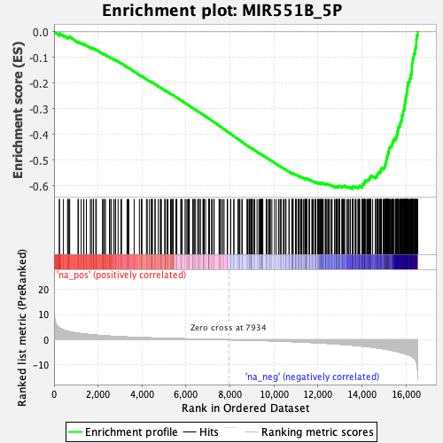
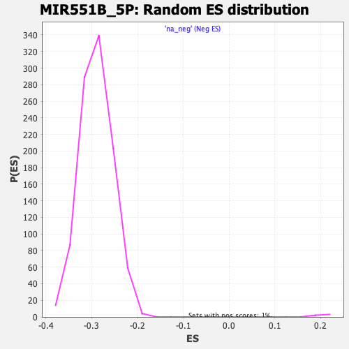

| | | Dataset | DE_genes2 |
| Phenotype | NoPhenotypeAvailable |
| Upregulated in class | na_neg |
| GeneSet | MIR551B_5P |
| Enrichment Score (ES) | -0.6115146 |
| Normalized Enrichment Score (NES) | -2.1103418 |
| Nominal p-value | 0.0 |
| FDR q-value | 0.0 |
| FWER p-Value | 0.0 |
Table: GSEA Results Summary

Fig 1: Enrichment plot: MIR551B_5P
Profile of the Running ES Score & Positions of GeneSet Members on the Rank Ordered List
| PROBE | GENE SYMBOL | GENE_TITLE | RANK IN GENE LIST | RANK METRIC SCORE | RUNNING ES | CORE ENRICHMENT | | 1 | MGAT4B | | | 242 | 4.718 | -0.0106 | No |
| 2 | YIPF5 | | | 243 | 4.718 | -0.0062 | No |
| 3 | FNDC3B | | | 427 | 3.886 | -0.0140 | No |
| 4 | EXOC4 | | | 613 | 3.376 | -0.0223 | No |
| 5 | TRAPPC9 | | | 645 | 3.320 | -0.0212 | No |
| 6 | SERPINE1 | | | 681 | 3.229 | -0.0204 | No |
| 7 | MGAT1 | | | 712 | 3.179 | -0.0193 | No |
| 8 | MYO5B | | | 1088 | 2.614 | -0.0401 | No |
| 9 | TIMM10B | | | 1113 | 2.588 | -0.0392 | No |
| 10 | SERINC3 | | | 1233 | 2.440 | -0.0443 | No |
| 11 | TRIM8 | | | 1349 | 2.317 | -0.0493 | No |
| 12 | SPATA2 | | | 1356 | 2.313 | -0.0475 | No |
| 13 | JAG1 | | | 1470 | 2.207 | -0.0525 | No |
| 14 | HRH1 | | | 1651 | 2.038 | -0.0618 | No |
| 15 | ZHX2 | | | 1698 | 1.992 | -0.0628 | No |
| 16 | FAT1 | | | 1782 | 1.934 | -0.0661 | No |
| 17 | RAB11A | | | 1794 | 1.923 | -0.0650 | No |
| 18 | DCAF12 | | | 1896 | 1.846 | -0.0696 | No |
| 19 | SAT1 | | | 1922 | 1.814 | -0.0694 | No |
| 20 | MARK2 | | | 2200 | 1.621 | -0.0851 | No |
| 21 | GGACT | | | 2250 | 1.589 | -0.0867 | No |
| 22 | BAHD1 | | | 2287 | 1.570 | -0.0875 | No |
| 23 | MAP3K13 | | | 2339 | 1.536 | -0.0892 | No |
| 24 | NALCN | | | 2520 | 1.433 | -0.0991 | No |
| 25 | UBE2D3 | | | 2537 | 1.422 | -0.0987 | No |
| 26 | CBX7 | | | 2603 | 1.386 | -0.1015 | No |
| 27 | SLC39A9 | | | 2713 | 1.325 | -0.1070 | No |
| 28 | COL1A2 | | | 2789 | 1.291 | -0.1105 | No |
| 29 | RERE | | | 2790 | 1.290 | -0.1093 | No |
| 30 | FLT1 | | | 2911 | 1.233 | -0.1156 | No |
| 31 | SSH2 | | | 3043 | 1.178 | -0.1226 | No |
| 32 | MMAB | | | 3068 | 1.167 | -0.1230 | No |
| 33 | SLC27A1 | | | 3317 | 1.069 | -0.1374 | No |
| 34 | SH3TC2 | | | 3365 | 1.052 | -0.1394 | No |
| 35 | KLHL5 | | | 3397 | 1.041 | -0.1403 | No |
| 36 | PHLPP1 | | | 3641 | 0.954 | -0.1545 | No |
| 37 | SHANK2 | | | 3879 | 0.872 | -0.1685 | No |
| 38 | TLR1 | | | 3968 | 0.846 | -0.1731 | No |
| 39 | NOX4 | | | 3975 | 0.843 | -0.1727 | No |
| 40 | IRF2BP2 | | | 3993 | 0.839 | -0.1730 | No |
| 41 | SGPP2 | | | 4200 | 0.779 | -0.1851 | No |
| 42 | CASZ1 | | | 4237 | 0.766 | -0.1866 | No |
| 43 | RND3 | | | 4335 | 0.739 | -0.1919 | No |
| 44 | PLAC8 | | | 4423 | 0.714 | -0.1967 | No |
| 45 | TMLHE | | | 4439 | 0.711 | -0.1969 | No |
| 46 | TRAPPC10 | | | 4455 | 0.705 | -0.1972 | No |
| 47 | CCDC88C | | | 4469 | 0.702 | -0.1974 | No |
| 48 | NUDT11 | | | 4586 | 0.665 | -0.2040 | No |
| 49 | TRAK1 | | | 4597 | 0.662 | -0.2040 | No |
| 50 | FAXC | | | 4736 | 0.628 | -0.2119 | No |
| 51 | PKNOX1 | | | 4836 | 0.608 | -0.2175 | No |
| 52 | MYO1D | | | 4838 | 0.608 | -0.2170 | No |
| 53 | CDK14 | | | 4879 | 0.599 | -0.2190 | No |
| 54 | ESR1 | | | 5037 | 0.561 | -0.2282 | No |
| 55 | SLC9A4 | | | 5040 | 0.560 | -0.2278 | No |
| 56 | ANO3 | | | 5058 | 0.555 | -0.2283 | No |
| 57 | EDIL3 | | | 5138 | 0.533 | -0.2327 | No |
| 58 | FOXA1 | | | 5180 | 0.524 | -0.2348 | No |
| 59 | RAD51B | | | 5295 | 0.493 | -0.2414 | No |
| 60 | TAT | | | 5341 | 0.482 | -0.2438 | No |
| 61 | FBXO8 | | | 5391 | 0.472 | -0.2464 | No |
| 62 | AFAP1 | | | 5406 | 0.468 | -0.2468 | No |
| 63 | CYP3A5 | | | 5412 | 0.467 | -0.2467 | No |
| 64 | ITGAV | | | 5541 | 0.441 | -0.2542 | No |
| 65 | PROX1 | | | 5559 | 0.436 | -0.2549 | No |
| 66 | CLDN11 | | | 5581 | 0.431 | -0.2558 | No |
| 67 | SAMD4A | | | 5759 | 0.393 | -0.2664 | No |
| 68 | SDK2 | | | 5787 | 0.387 | -0.2677 | No |
| 69 | SYTL2 | | | 5827 | 0.379 | -0.2698 | No |
| 70 | RNF11 | | | 5955 | 0.355 | -0.2773 | No |
| 71 | CCDC93 | | | 6006 | 0.345 | -0.2801 | No |
| 72 | HIC2 | | | 6072 | 0.333 | -0.2839 | No |
| 73 | EP300 | | | 6102 | 0.325 | -0.2854 | No |
| 74 | ALDH1A1 | | | 6139 | 0.317 | -0.2873 | No |
| 75 | FAM160A1 | | | 6151 | 0.315 | -0.2877 | No |
| 76 | PPM1L | | | 6306 | 0.285 | -0.2970 | No |
| 77 | HSD17B6 | | | 6319 | 0.283 | -0.2975 | No |
| 78 | TRPV3 | | | 6360 | 0.273 | -0.2997 | No |
| 79 | SORL1 | | | 6401 | 0.263 | -0.3019 | No |
| 80 | PXN | | | 6411 | 0.262 | -0.3023 | No |
| 81 | SP100 | | | 6519 | 0.240 | -0.3087 | No |
| 82 | ZNF610 | | | 6576 | 0.227 | -0.3119 | No |
| 83 | PPP1R2 | | | 6586 | 0.225 | -0.3123 | No |
| 84 | NAALADL2 | | | 6597 | 0.223 | -0.3127 | No |
| 85 | FGFR2 | | | 6657 | 0.213 | -0.3162 | No |
| 86 | TSPYL1 | | | 6769 | 0.190 | -0.3229 | No |
| 87 | TMEM132B | | | 6790 | 0.186 | -0.3240 | No |
| 88 | TP53TG3D | | | 6793 | 0.186 | -0.3239 | No |
| 89 | ASB8 | | | 6823 | 0.181 | -0.3255 | No |
| 90 | ITGA2 | | | 6887 | 0.173 | -0.3293 | No |
| 91 | CREBBP | | | 7037 | 0.148 | -0.3384 | No |
| 92 | BTF3L4 | | | 7043 | 0.148 | -0.3386 | No |
| 93 | RINL | | | 7044 | 0.147 | -0.3385 | No |
| 94 | HEY1 | | | 7047 | 0.146 | -0.3384 | No |
| 95 | CDYL2 | | | 7059 | 0.144 | -0.3390 | No |
| 96 | FOXO3 | | | 7160 | 0.123 | -0.3451 | No |
| 97 | SYT16 | | | 7180 | 0.120 | -0.3462 | No |
| 98 | PXYLP1 | | | 7263 | 0.104 | -0.3512 | No |
| 99 | MAN1A1 | | | 7278 | 0.101 | -0.3519 | No |
| 100 | NHLRC3 | | | 7501 | 0.065 | -0.3657 | No |
| 101 | UBE2E2 | | | 7519 | 0.061 | -0.3667 | No |
| 102 | EPB41L3 | | | 7535 | 0.059 | -0.3675 | No |
| 103 | TC2N | | | 7601 | 0.048 | -0.3715 | No |
| 104 | MARK1 | | | 7663 | 0.039 | -0.3753 | No |
| 105 | ELAVL1 | | | 7729 | 0.028 | -0.3793 | No |
| 106 | DMD | | | 7872 | 0.008 | -0.3881 | No |
| 107 | SLC30A4 | | | 7890 | 0.005 | -0.3892 | No |
| 108 | C12orf56 | | | 8027 | -0.016 | -0.3976 | No |
| 109 | LNX2 | | | 8031 | -0.016 | -0.3978 | No |
| 110 | EPB41L4B | | | 8172 | -0.037 | -0.4064 | No |
| 111 | SLC31A1 | | | 8175 | -0.038 | -0.4065 | No |
| 112 | BMPR2 | | | 8353 | -0.067 | -0.4174 | No |
| 113 | MYO1H | | | 8414 | -0.078 | -0.4211 | No |
| 114 | MYLK | | | 8420 | -0.079 | -0.4213 | No |
| 115 | ONECUT2 | | | 8448 | -0.084 | -0.4229 | No |
| 116 | HSD17B7 | | | 8541 | -0.100 | -0.4286 | No |
| 117 | COX7A2L | | | 8551 | -0.102 | -0.4290 | No |
| 118 | ZNF805 | | | 8769 | -0.148 | -0.4424 | No |
| 119 | PER3 | | | 8796 | -0.151 | -0.4438 | No |
| 120 | GIPC2 | | | 8859 | -0.162 | -0.4475 | No |
| 121 | SESN1 | | | 8880 | -0.166 | -0.4486 | No |
| 122 | CCNY | | | 8891 | -0.169 | -0.4491 | No |
| 123 | MAP3K7CL | | | 8905 | -0.171 | -0.4497 | No |
| 124 | GABRB3 | | | 8971 | -0.186 | -0.4536 | No |
| 125 | MEIS2 | | | 8975 | -0.187 | -0.4536 | No |
| 126 | CDC14A | | | 8976 | -0.187 | -0.4534 | No |
| 127 | KIAA1324L | | | 8977 | -0.188 | -0.4533 | No |
| 128 | EPHA3 | | | 9017 | -0.196 | -0.4555 | No |
| 129 | RALBP1 | | | 9072 | -0.207 | -0.4587 | No |
| 130 | TNFAIP8 | | | 9123 | -0.219 | -0.4616 | No |
| 131 | ADH7 | | | 9227 | -0.248 | -0.4677 | No |
| 132 | IL1RAP | | | 9308 | -0.267 | -0.4725 | No |
| 133 | NCOA7 | | | 9341 | -0.274 | -0.4742 | No |
| 134 | TET2 | | | 9359 | -0.278 | -0.4750 | No |
| 135 | ANKRD10 | | | 9398 | -0.288 | -0.4771 | No |
| 136 | MEX3C | | | 9404 | -0.289 | -0.4771 | No |
| 137 | ZC3H12C | | | 9437 | -0.300 | -0.4788 | No |
| 138 | DPYD | | | 9449 | -0.303 | -0.4792 | No |
| 139 | DHRS2 | | | 9453 | -0.303 | -0.4791 | No |
| 140 | SCD | | | 9481 | -0.309 | -0.4805 | No |
| 141 | CAB39 | | | 9490 | -0.311 | -0.4807 | No |
| 142 | ATXN10 | | | 9643 | -0.351 | -0.4898 | No |
| 143 | HEATR5B | | | 9650 | -0.352 | -0.4899 | No |
| 144 | VGLL3 | | | 9701 | -0.369 | -0.4926 | No |
| 145 | ELL2 | | | 9768 | -0.392 | -0.4964 | No |
| 146 | MTX2 | | | 9797 | -0.401 | -0.4977 | No |
| 147 | ZBTB34 | | | 9836 | -0.411 | -0.4997 | No |
| 148 | SLC44A1 | | | 9902 | -0.430 | -0.5034 | No |
| 149 | BTBD7 | | | 10023 | -0.466 | -0.5104 | No |
| 150 | SP8 | | | 10106 | -0.492 | -0.5150 | No |
| 151 | ASTN2 | | | 10210 | -0.528 | -0.5209 | No |
| 152 | ICK | | | 10272 | -0.545 | -0.5242 | No |
| 153 | BSN | | | 10310 | -0.558 | -0.5260 | No |
| 154 | PCDH7 | | | 10320 | -0.560 | -0.5260 | No |
| 155 | ANKH | | | 10421 | -0.592 | -0.5317 | No |
| 156 | GOSR1 | | | 10460 | -0.606 | -0.5335 | No |
| 157 | PLIN1 | | | 10522 | -0.634 | -0.5367 | No |
| 158 | SECISBP2L | | | 10544 | -0.641 | -0.5374 | No |
| 159 | CNKSR3 | | | 10679 | -0.686 | -0.5451 | No |
| 160 | DGKH | | | 10687 | -0.688 | -0.5449 | No |
| 161 | STAC | | | 10808 | -0.728 | -0.5516 | No |
| 162 | LSM11 | | | 10816 | -0.734 | -0.5514 | No |
| 163 | MKRN2 | | | 10834 | -0.739 | -0.5518 | No |
| 164 | RFX3 | | | 10837 | -0.739 | -0.5512 | No |
| 165 | COG3 | | | 10854 | -0.743 | -0.5515 | No |
| 166 | CPD | | | 10869 | -0.751 | -0.5517 | No |
| 167 | YIPF6 | | | 10978 | -0.793 | -0.5576 | No |
| 168 | RECK | | | 10983 | -0.795 | -0.5572 | No |
| 169 | MAB21L1 | | | 10993 | -0.799 | -0.5570 | No |
| 170 | SLAIN2 | | | 11020 | -0.808 | -0.5578 | No |
| 171 | SERP1 | | | 11095 | -0.840 | -0.5616 | No |
| 172 | AP3M1 | | | 11102 | -0.842 | -0.5612 | No |
| 173 | FEM1C | | | 11125 | -0.851 | -0.5618 | No |
| 174 | C5orf22 | | | 11144 | -0.859 | -0.5621 | No |
| 175 | PCDH9 | | | 11206 | -0.883 | -0.5651 | No |
| 176 | SPTY2D1 | | | 11216 | -0.890 | -0.5648 | No |
| 177 | PELO | | | 11262 | -0.908 | -0.5668 | No |
| 178 | CPE | | | 11265 | -0.910 | -0.5661 | No |
| 179 | FGF9 | | | 11343 | -0.947 | -0.5700 | No |
| 180 | ZBTB14 | | | 11394 | -0.966 | -0.5722 | No |
| 181 | WDR26 | | | 11419 | -0.977 | -0.5727 | No |
| 182 | ST13 | | | 11437 | -0.983 | -0.5729 | No |
| 183 | AFF4 | | | 11444 | -0.986 | -0.5723 | No |
| 184 | DTWD2 | | | 11448 | -0.986 | -0.5716 | No |
| 185 | YTHDF1 | | | 11454 | -0.988 | -0.5710 | No |
| 186 | STX16 | | | 11478 | -0.999 | -0.5715 | No |
| 187 | NBEAL1 | | | 11501 | -1.004 | -0.5719 | No |
| 188 | GALNT1 | | | 11599 | -1.045 | -0.5770 | No |
| 189 | SLC10A7 | | | 11600 | -1.046 | -0.5760 | No |
| 190 | AGTR1 | | | 11608 | -1.049 | -0.5755 | No |
| 191 | MIA2 | | | 11719 | -1.094 | -0.5813 | No |
| 192 | PFKFB2 | | | 11744 | -1.106 | -0.5817 | No |
| 193 | AAK1 | | | 11775 | -1.118 | -0.5826 | No |
| 194 | PABPC3 | | | 11847 | -1.152 | -0.5859 | No |
| 195 | PRR16 | | | 11890 | -1.175 | -0.5874 | No |
| 196 | CADM2 | | | 11895 | -1.177 | -0.5866 | No |
| 197 | AKR1C3 | | | 11904 | -1.180 | -0.5860 | No |
| 198 | INO80D | | | 11983 | -1.212 | -0.5897 | No |
| 199 | LRRC8B | | | 11996 | -1.220 | -0.5893 | No |
| 200 | CPEB3 | | | 12009 | -1.225 | -0.5889 | No |
| 201 | ADNP2 | | | 12024 | -1.233 | -0.5886 | No |
| 202 | MBD2 | | | 12072 | -1.259 | -0.5904 | No |
| 203 | ZNF354C | | | 12076 | -1.262 | -0.5894 | No |
| 204 | ERO1B | | | 12094 | -1.272 | -0.5893 | No |
| 205 | ZC3H18 | | | 12124 | -1.285 | -0.5899 | No |
| 206 | ZFHX4 | | | 12145 | -1.300 | -0.5899 | No |
| 207 | TRIM9 | | | 12150 | -1.307 | -0.5889 | No |
| 208 | FGF12 | | | 12190 | -1.322 | -0.5901 | No |
| 209 | NRN1 | | | 12206 | -1.330 | -0.5898 | No |
| 210 | STK3 | | | 12217 | -1.334 | -0.5892 | No |
| 211 | PPP1R9A | | | 12236 | -1.343 | -0.5891 | No |
| 212 | HIPK3 | | | 12328 | -1.391 | -0.5934 | No |
| 213 | ZEB1 | | | 12339 | -1.396 | -0.5927 | No |
| 214 | TSHZ1 | | | 12359 | -1.408 | -0.5926 | No |
| 215 | CCT2 | | | 12360 | -1.408 | -0.5913 | No |
| 216 | GFPT1 | | | 12407 | -1.428 | -0.5928 | No |
| 217 | HOOK1 | | | 12458 | -1.453 | -0.5946 | No |
| 218 | NOVA1 | | | 12488 | -1.470 | -0.5950 | No |
| 219 | TMEM33 | | | 12494 | -1.473 | -0.5940 | No |
| 220 | ZNF236 | | | 12573 | -1.521 | -0.5974 | No |
| 221 | C1orf112 | | | 12615 | -1.540 | -0.5985 | No |
| 222 | GREB1 | | | 12639 | -1.556 | -0.5985 | No |
| 223 | RAB2A | | | 12757 | -1.620 | -0.6042 | No |
| 224 | BRWD3 | | | 12760 | -1.622 | -0.6028 | No |
| 225 | UBR7 | | | 12817 | -1.661 | -0.6048 | No |
| 226 | MTMR6 | | | 12827 | -1.670 | -0.6038 | No |
| 227 | CCDC84 | | | 12845 | -1.685 | -0.6033 | No |
| 228 | TMEM47 | | | 12863 | -1.694 | -0.6028 | No |
| 229 | KCNQ3 | | | 12865 | -1.694 | -0.6012 | No |
| 230 | SCAMP1 | | | 12930 | -1.733 | -0.6036 | No |
| 231 | YBX1 | | | 12942 | -1.739 | -0.6027 | No |
| 232 | SLC35A3 | | | 12951 | -1.743 | -0.6015 | No |
| 233 | IQGAP2 | | | 12961 | -1.746 | -0.6005 | No |
| 234 | CLOCK | | | 12988 | -1.761 | -0.6004 | No |
| 235 | SRRM1 | | | 13088 | -1.820 | -0.6049 | No |
| 236 | RAD23B | | | 13094 | -1.823 | -0.6035 | No |
| 237 | TM4SF4 | | | 13100 | -1.825 | -0.6021 | No |
| 238 | GABPB1 | | | 13127 | -1.841 | -0.6020 | No |
| 239 | UBE2G1 | | | 13158 | -1.867 | -0.6022 | No |
| 240 | NUDT16 | | | 13174 | -1.875 | -0.6013 | No |
| 241 | ZMYM4 | | | 13184 | -1.882 | -0.6002 | No |
| 242 | RBM12 | | | 13209 | -1.896 | -0.5999 | No |
| 243 | CCNC | | | 13299 | -1.953 | -0.6036 | No |
| 244 | SEC23A | | | 13358 | -1.999 | -0.6053 | No |
| 245 | ACTR3 | | | 13382 | -2.016 | -0.6049 | No |
| 246 | KLHL28 | | | 13452 | -2.071 | -0.6072 | No |
| 247 | ALCAM | | | 13469 | -2.081 | -0.6063 | No |
| 248 | GTF2H5 | | | 13554 | -2.134 | -0.6095 | Yes |
| 249 | ZXDA | | | 13555 | -2.135 | -0.6075 | Yes |
| 250 | MYEF2 | | | 13560 | -2.139 | -0.6058 | Yes |
| 251 | LTA4H | | | 13569 | -2.143 | -0.6043 | Yes |
| 252 | PPP1R15B | | | 13582 | -2.151 | -0.6030 | Yes |
| 253 | GOPC | | | 13596 | -2.161 | -0.6018 | Yes |
| 254 | SCML2 | | | 13684 | -2.228 | -0.6052 | Yes |
| 255 | FBXL17 | | | 13703 | -2.244 | -0.6042 | Yes |
| 256 | MOCS2 | | | 13728 | -2.262 | -0.6036 | Yes |
| 257 | DPY30 | | | 13810 | -2.337 | -0.6064 | Yes |
| 258 | EPS8 | | | 13848 | -2.369 | -0.6065 | Yes |
| 259 | SMAD2 | | | 13857 | -2.375 | -0.6048 | Yes |
| 260 | GRPEL2 | | | 13859 | -2.377 | -0.6027 | Yes |
| 261 | TMEM245 | | | 13878 | -2.396 | -0.6016 | Yes |
| 262 | TMEM170B | | | 13898 | -2.414 | -0.6005 | Yes |
| 263 | CPEB4 | | | 13999 | -2.494 | -0.6044 | Yes |
| 264 | USP25 | | | 14002 | -2.495 | -0.6022 | Yes |
| 265 | KPNA3 | | | 14006 | -2.498 | -0.6000 | Yes |
| 266 | TCF12 | | | 14013 | -2.503 | -0.5981 | Yes |
| 267 | CRIPT | | | 14015 | -2.506 | -0.5958 | Yes |
| 268 | PABPC1 | | | 14018 | -2.508 | -0.5936 | Yes |
| 269 | RBBP7 | | | 14053 | -2.553 | -0.5933 | Yes |
| 270 | CLINT1 | | | 14086 | -2.585 | -0.5929 | Yes |
| 271 | PANK1 | | | 14099 | -2.595 | -0.5913 | Yes |
| 272 | IGF2BP3 | | | 14100 | -2.596 | -0.5888 | Yes |
| 273 | LARP4B | | | 14110 | -2.604 | -0.5870 | Yes |
| 274 | PPP1CC | | | 14114 | -2.608 | -0.5847 | Yes |
| 275 | NCKAP1 | | | 14131 | -2.624 | -0.5833 | Yes |
| 276 | SEL1L | | | 14134 | -2.628 | -0.5810 | Yes |
| 277 | VPS13C | | | 14138 | -2.631 | -0.5787 | Yes |
| 278 | LIMCH1 | | | 14212 | -2.702 | -0.5807 | Yes |
| 279 | RAP2A | | | 14243 | -2.739 | -0.5800 | Yes |
| 280 | ESPL1 | | | 14262 | -2.749 | -0.5786 | Yes |
| 281 | MDM2 | | | 14273 | -2.756 | -0.5766 | Yes |
| 282 | ARPP19 | | | 14285 | -2.770 | -0.5748 | Yes |
| 283 | FAM120A | | | 14328 | -2.811 | -0.5747 | Yes |
| 284 | RAB18 | | | 14337 | -2.816 | -0.5726 | Yes |
| 285 | DPH6 | | | 14340 | -2.819 | -0.5701 | Yes |
| 286 | ANGPT1 | | | 14354 | -2.833 | -0.5683 | Yes |
| 287 | PCID2 | | | 14369 | -2.855 | -0.5665 | Yes |
| 288 | OCIAD1 | | | 14378 | -2.863 | -0.5643 | Yes |
| 289 | ENAH | | | 14393 | -2.875 | -0.5625 | Yes |
| 290 | FZD3 | | | 14403 | -2.879 | -0.5604 | Yes |
| 291 | CAPZA1 | | | 14484 | -2.972 | -0.5626 | Yes |
| 292 | TBC1D23 | | | 14604 | -3.117 | -0.5671 | Yes |
| 293 | GALNT7 | | | 14605 | -3.117 | -0.5642 | Yes |
| 294 | IMPAD1 | | | 14666 | -3.208 | -0.5649 | Yes |
| 295 | HECW1 | | | 14676 | -3.214 | -0.5625 | Yes |
| 296 | SUCO | | | 14693 | -3.235 | -0.5605 | Yes |
| 297 | XRN1 | | | 14695 | -3.238 | -0.5575 | Yes |
| 298 | NHS | | | 14701 | -3.245 | -0.5548 | Yes |
| 299 | NARS2 | | | 14714 | -3.258 | -0.5525 | Yes |
| 300 | SGPP1 | | | 14724 | -3.269 | -0.5501 | Yes |
| 301 | FSD1L | | | 14743 | -3.299 | -0.5481 | Yes |
| 302 | ZBTB20 | | | 14794 | -3.351 | -0.5481 | Yes |
| 303 | NLN | | | 14826 | -3.393 | -0.5469 | Yes |
| 304 | SCAI | | | 14827 | -3.393 | -0.5437 | Yes |
| 305 | TTC28 | | | 14839 | -3.410 | -0.5412 | Yes |
| 306 | MAP3K2 | | | 14856 | -3.434 | -0.5390 | Yes |
| 307 | STRBP | | | 14867 | -3.445 | -0.5364 | Yes |
| 308 | FCHO2 | | | 14878 | -3.473 | -0.5338 | Yes |
| 309 | NUP160 | | | 14887 | -3.486 | -0.5311 | Yes |
| 310 | A1CF | | | 14960 | -3.585 | -0.5322 | Yes |
| 311 | ANK2 | | | 14984 | -3.621 | -0.5303 | Yes |
| 312 | NR3C1 | | | 15016 | -3.666 | -0.5288 | Yes |
| 313 | GLS | | | 15026 | -3.685 | -0.5259 | Yes |
| 314 | MBNL2 | | | 15039 | -3.698 | -0.5232 | Yes |
| 315 | LRP6 | | | 15043 | -3.706 | -0.5199 | Yes |
| 316 | HNRNPU | | | 15058 | -3.735 | -0.5173 | Yes |
| 317 | PIAS2 | | | 15062 | -3.736 | -0.5140 | Yes |
| 318 | DNAJB14 | | | 15088 | -3.772 | -0.5121 | Yes |
| 319 | RALGPS2 | | | 15092 | -3.779 | -0.5088 | Yes |
| 320 | PEX3 | | | 15100 | -3.786 | -0.5057 | Yes |
| 321 | ZBTB21 | | | 15106 | -3.796 | -0.5024 | Yes |
| 322 | UHRF2 | | | 15109 | -3.799 | -0.4990 | Yes |
| 323 | MAP4K3 | | | 15110 | -3.799 | -0.4955 | Yes |
| 324 | PRKAA1 | | | 15134 | -3.825 | -0.4934 | Yes |
| 325 | FUBP3 | | | 15137 | -3.830 | -0.4899 | Yes |
| 326 | MSL2 | | | 15144 | -3.836 | -0.4867 | Yes |
| 327 | PPHLN1 | | | 15147 | -3.840 | -0.4833 | Yes |
| 328 | ETV1 | | | 15152 | -3.846 | -0.4799 | Yes |
| 329 | SF3B1 | | | 15180 | -3.893 | -0.4780 | Yes |
| 330 | RICTOR | | | 15182 | -3.895 | -0.4744 | Yes |
| 331 | ERCC4 | | | 15195 | -3.914 | -0.4715 | Yes |
| 332 | RAD54B | | | 15206 | -3.922 | -0.4685 | Yes |
| 333 | FSIP1 | | | 15215 | -3.937 | -0.4653 | Yes |
| 334 | ATM | | | 15219 | -3.945 | -0.4619 | Yes |
| 335 | BNIP2 | | | 15226 | -3.959 | -0.4585 | Yes |
| 336 | RAP2C | | | 15227 | -3.960 | -0.4549 | Yes |
| 337 | YOD1 | | | 15242 | -3.991 | -0.4520 | Yes |
| 338 | ARMC8 | | | 15269 | -4.063 | -0.4498 | Yes |
| 339 | ARHGAP5 | | | 15292 | -4.102 | -0.4474 | Yes |
| 340 | ALG13 | | | 15320 | -4.152 | -0.4452 | Yes |
| 341 | BARD1 | | | 15360 | -4.219 | -0.4437 | Yes |
| 342 | CHD9 | | | 15371 | -4.244 | -0.4404 | Yes |
| 343 | TMX4 | | | 15380 | -4.259 | -0.4369 | Yes |
| 344 | KLHL15 | | | 15382 | -4.261 | -0.4330 | Yes |
| 345 | ATAD2B | | | 15409 | -4.315 | -0.4306 | Yes |
| 346 | BIRC6 | | | 15417 | -4.339 | -0.4270 | Yes |
| 347 | MTX3 | | | 15421 | -4.346 | -0.4231 | Yes |
| 348 | CUL3 | | | 15431 | -4.357 | -0.4196 | Yes |
| 349 | CEBPZOS | | | 15511 | -4.505 | -0.4204 | Yes |
| 350 | IREB2 | | | 15518 | -4.519 | -0.4165 | Yes |
| 351 | CBX3 | | | 15520 | -4.527 | -0.4124 | Yes |
| 352 | CHORDC1 | | | 15557 | -4.605 | -0.4103 | Yes |
| 353 | CDC5L | | | 15563 | -4.617 | -0.4063 | Yes |
| 354 | ZFX | | | 15584 | -4.668 | -0.4032 | Yes |
| 355 | NEMP1 | | | 15605 | -4.735 | -0.4001 | Yes |
| 356 | PHIP | | | 15609 | -4.738 | -0.3958 | Yes |
| 357 | DPY19L3 | | | 15613 | -4.744 | -0.3916 | Yes |
| 358 | NR1D2 | | | 15617 | -4.753 | -0.3874 | Yes |
| 359 | NUFIP2 | | | 15626 | -4.769 | -0.3834 | Yes |
| 360 | ZBTB41 | | | 15635 | -4.784 | -0.3795 | Yes |
| 361 | MTDH | | | 15640 | -4.793 | -0.3753 | Yes |
| 362 | QKI | | | 15650 | -4.807 | -0.3714 | Yes |
| 363 | CSPP1 | | | 15679 | -4.873 | -0.3686 | Yes |
| 364 | TMEM170A | | | 15725 | -4.953 | -0.3667 | Yes |
| 365 | NDUFA5 | | | 15732 | -4.963 | -0.3625 | Yes |
| 366 | CLPX | | | 15738 | -4.986 | -0.3582 | Yes |
| 367 | TRMT10A | | | 15746 | -5.005 | -0.3539 | Yes |
| 368 | SLC6A15 | | | 15761 | -5.034 | -0.3501 | Yes |
| 369 | FAM91A1 | | | 15787 | -5.094 | -0.3469 | Yes |
| 370 | DCAF17 | | | 15797 | -5.119 | -0.3427 | Yes |
| 371 | LPP | | | 15802 | -5.131 | -0.3382 | Yes |
| 372 | SRSF6 | | | 15806 | -5.148 | -0.3336 | Yes |
| 373 | ZDHHC21 | | | 15817 | -5.173 | -0.3294 | Yes |
| 374 | TBC1D15 | | | 15821 | -5.195 | -0.3248 | Yes |
| 375 | MICU3 | | | 15860 | -5.296 | -0.3222 | Yes |
| 376 | ZBTB11 | | | 15869 | -5.307 | -0.3177 | Yes |
| 377 | RPS6KB1 | | | 15871 | -5.313 | -0.3129 | Yes |
| 378 | PPP4R2 | | | 15879 | -5.327 | -0.3083 | Yes |
| 379 | CUL5 | | | 15907 | -5.403 | -0.3050 | Yes |
| 380 | SMARCA5 | | | 15909 | -5.412 | -0.3000 | Yes |
| 381 | BTAF1 | | | 15935 | -5.473 | -0.2965 | Yes |
| 382 | MLLT10 | | | 15937 | -5.474 | -0.2914 | Yes |
| 383 | NADK2 | | | 15938 | -5.475 | -0.2863 | Yes |
| 384 | PTPN4 | | | 15944 | -5.492 | -0.2815 | Yes |
| 385 | TWSG1 | | | 15960 | -5.543 | -0.2773 | Yes |
| 386 | RASSF8 | | | 15964 | -5.551 | -0.2723 | Yes |
| 387 | NAA50 | | | 15974 | -5.568 | -0.2677 | Yes |
| 388 | LIMS1 | | | 15983 | -5.619 | -0.2630 | Yes |
| 389 | PARPBP | | | 15988 | -5.636 | -0.2580 | Yes |
| 390 | DPP8 | | | 15999 | -5.657 | -0.2533 | Yes |
| 391 | PARD6B | | | 16005 | -5.683 | -0.2484 | Yes |
| 392 | SMC5 | | | 16016 | -5.725 | -0.2436 | Yes |
| 393 | RSF1 | | | 16033 | -5.770 | -0.2393 | Yes |
| 394 | PHC3 | | | 16035 | -5.790 | -0.2339 | Yes |
| 395 | SNX10 | | | 16053 | -5.823 | -0.2296 | Yes |
| 396 | SLC4A7 | | | 16056 | -5.834 | -0.2243 | Yes |
| 397 | SNX27 | | | 16062 | -5.849 | -0.2191 | Yes |
| 398 | TMPO | | | 16067 | -5.864 | -0.2139 | Yes |
| 399 | PURA | | | 16076 | -5.891 | -0.2089 | Yes |
| 400 | ECT2 | | | 16082 | -5.906 | -0.2038 | Yes |
| 401 | CEP350 | | | 16086 | -5.920 | -0.1984 | Yes |
| 402 | UCHL5 | | | 16127 | -6.042 | -0.1953 | Yes |
| 403 | UBA5 | | | 16157 | -6.144 | -0.1914 | Yes |
| 404 | PPP4R3A | | | 16161 | -6.169 | -0.1858 | Yes |
| 405 | MIER3 | | | 16176 | -6.252 | -0.1809 | Yes |
| 406 | EIF3A | | | 16216 | -6.409 | -0.1773 | Yes |
| 407 | USP37 | | | 16219 | -6.429 | -0.1715 | Yes |
| 408 | ARL13B | | | 16224 | -6.452 | -0.1657 | Yes |
| 409 | MBNL1 | | | 16249 | -6.561 | -0.1611 | Yes |
| 410 | PRPF40A | | | 16254 | -6.575 | -0.1552 | Yes |
| 411 | ACER3 | | | 16263 | -6.649 | -0.1495 | Yes |
| 412 | RSBN1L | | | 16265 | -6.654 | -0.1434 | Yes |
| 413 | CEP97 | | | 16267 | -6.661 | -0.1373 | Yes |
| 414 | LRRC40 | | | 16275 | -6.717 | -0.1314 | Yes |
| 415 | DICER1 | | | 16276 | -6.737 | -0.1252 | Yes |
| 416 | CPSF6 | | | 16289 | -6.822 | -0.1196 | Yes |
| 417 | MPP6 | | | 16306 | -6.890 | -0.1142 | Yes |
| 418 | RDX | | | 16310 | -6.900 | -0.1079 | Yes |
| 419 | ZNF770 | | | 16325 | -7.007 | -0.1023 | Yes |
| 420 | UBXN2B | | | 16346 | -7.197 | -0.0968 | Yes |
| 421 | LIN7C | | | 16354 | -7.238 | -0.0905 | Yes |
| 422 | ZNF638 | | | 16358 | -7.252 | -0.0839 | Yes |
| 423 | PHF20L1 | | | 16403 | -7.776 | -0.0794 | Yes |
| 424 | RMI1 | | | 16408 | -7.835 | -0.0724 | Yes |
| 425 | ARF6 | | | 16426 | -8.026 | -0.0660 | Yes |
| 426 | SLC7A11 | | | 16437 | -8.120 | -0.0590 | Yes |
| 427 | CNTN1 | | | 16457 | -8.479 | -0.0523 | Yes |
| 428 | SMC2 | | | 16464 | -8.568 | -0.0447 | Yes |
| 429 | SSX2IP | | | 16465 | -8.588 | -0.0367 | Yes |
| 430 | MCM10 | | | 16471 | -8.676 | -0.0290 | Yes |
| 431 | CENPK | | | 16485 | -9.298 | -0.0211 | Yes |
| 432 | ARL4A | | | 16498 | -9.933 | -0.0126 | Yes |
| 433 | ZCCHC14 | | | 16531 | -15.692 | 0.0000 | Yes |
Table: GSEA details [plain text format]

Fig 2: MIR551B_5P: Random ES distribution
Gene set null distribution of ES for MIR551B_5P